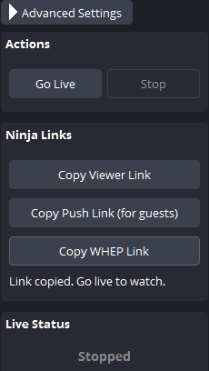
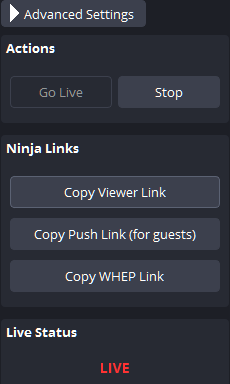

Your OBS program.
Your WHEP player.
Copy an endpoint from OBS and paste it into a compatible player. The player does not need VDO.Ninja.
Requires plugin v1.1.83 or later. Use H.264 video and Opus audio for the tested setup.
1Enable and copy
Open Tools → VDO.Ninja Studio → Publish. Set Max Viewers to allow everyone who will watch.
While stopped, click Enable WHEP / Copy Link. OBS saves a link key and copies the endpoint.
The copied address starts with https://whep.vdo.ninja/. Keep it private: anyone with the link can watch while this output is live.


2Go live
Click Go Live. Wait for LIVE.
This uses OBS's main streaming output. It shares the picture, audio and encoder with your normal plugin viewers.
It does not run alongside another destination in that same OBS streaming slot. For participants in a VDO.Ninja room, use the separate Guest Return guide.


3Paste into your player
Paste the copied link into your player's WHEP endpoint or WHEP URL field, then start playback. Confirm that the picture moves and audio plays.
Opening the endpoint in a browser tab only shows the server's information page. Use the player's WHEP input.
Allow upload for every viewer. Each viewer receives a separate copy from OBS. The WHEP service handles signaling; it does not distribute the media for you.
Click Stop in OBS to end playback. After going live again, reconnect any player that does not retry automatically.
If playback does not start
- Enabled WHEP after going live? Stop, click Enable WHEP / Copy Link, then go live again.
- Viewer limit reached? Close an unused player, or stop and increase Max Viewers.
- Codec mismatch? Use H.264 and Opus. Firefox needs its OpenH264 codec enabled.
Player compatibility and current limits
H.264/Opus playback was checked in independent Chromium and Firefox players on Windows, using standard HTTP and WebRTC. This does not certify every player, device or network. HEVC/AV1 browser playback and macOS/Linux WHEP runtime are not yet qualified.
The existing service keeps one ICE ETag per stream. For simultaneous joins, prefer players that finish gathering ICE candidates before sending their offer; overlapping trickle requests can receive HTTP 412. ICE restart is not supported by this integration.
Players should close their WebRTC connection when stopping. The server's DELETE notification identifies the stream, so DELETE alone cannot immediately remove a particular viewer. Closing the media connection removes that viewer without interrupting others; if its close notification is lost, the slot remains occupied until the connection times out.
Disable WHEP or replace a shared link
Stop streaming. In Settings → Stream → Advanced Settings, clear WHEP link key (blank disables) and save. Leave it blank to disable WHEP, or click Enable WHEP / Copy Link to generate a new link before going live.